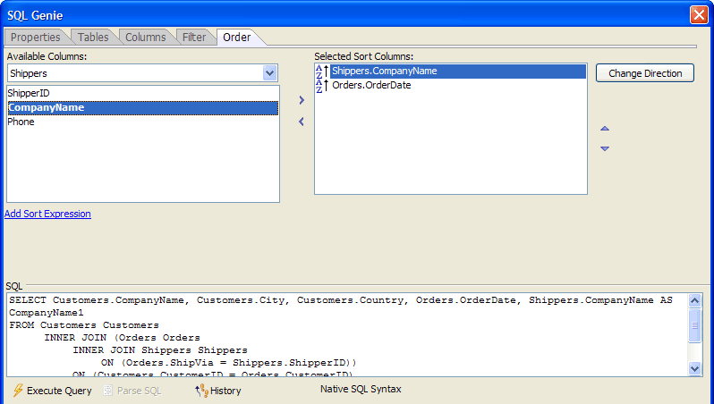

SQL Genie Order Tab
The Order tab of the SQL Genie sequences the records that your SQL SELECT statement will return.

Any time that the  Execute Query
button is enabled, you may click it to see a sample of the records that
the query will return. At any time you may click the History button to see a list of SQL statements previously
created in this session in the <span class=Screen>SQL History Dialog</span>.
Execute Query
button is enabled, you may click it to see a sample of the records that
the query will return. At any time you may click the History button to see a list of SQL statements previously
created in this session in the <span class=Screen>SQL History Dialog</span>.
Ordering Records in the Report
Make a table selection from the drop down list box at the top left corner of the screen.
Select a column in the Available Columns list and click
 to add them to the Selected Sort Columns
list.
to add them to the Selected Sort Columns
list.Repeat steps 1 and 2 to add other sort columns.
Set the priority of sort columns by moving them up and down in the Selected Sort Columns list with the
 and buttons.
Columns at the top of the list are sorted first. Columns at the bottom
of the list are sorted last.
and buttons.
Columns at the top of the list are sorted first. Columns at the bottom
of the list are sorted last.To remove a sort column, select it in the Selected Sort Columns list and click
 .
.
See Also